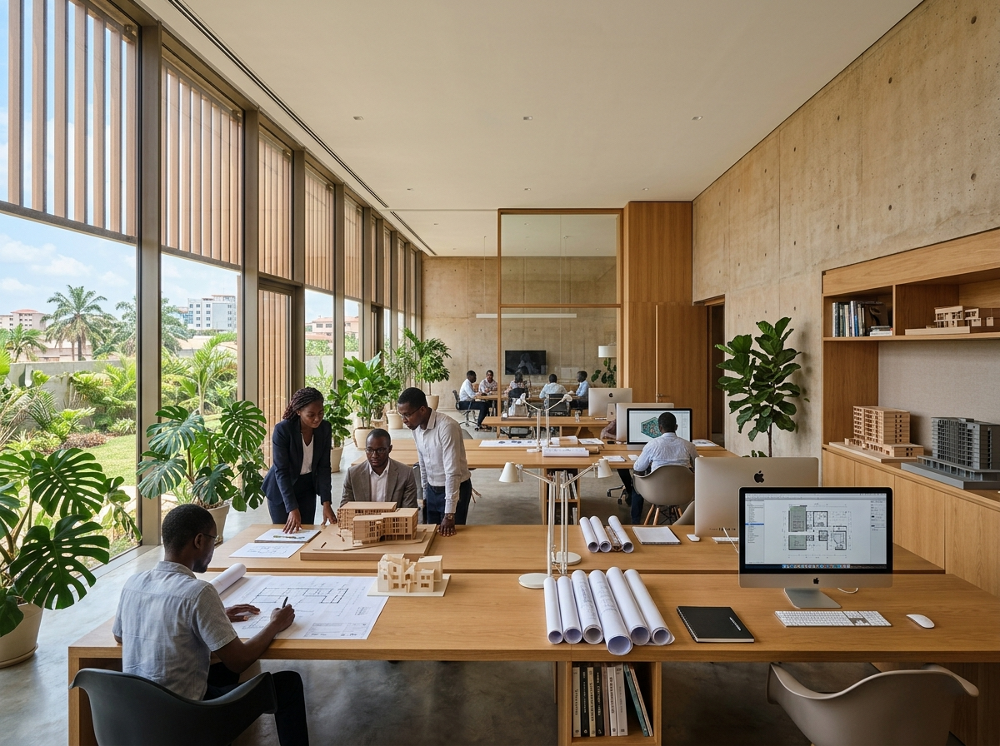
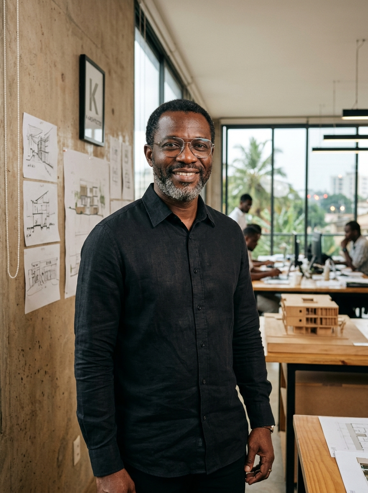

Qui sommes-nous.

« Faire de votre rêve le nôtre et vous assister techniquement dans toutes les étapes de sa concrétisation », tel est le leitmotiv de la Société à Responsabilité Limitée K-ARCHITECTES, créée en juin 2016 à Lomé.
Quoiqu'elle soit une jeune entreprise, l'agence réunit une équipe pluridisciplinaire d'architectes, d'ingénieurs et de techniciens présentant des capacités et une expérience considérables en matière de conception architecturale, de contrôle d'exécution et de réalisation de projets.
Inscrit au tableau de l'Ordre National des Architectes du Togo (ONAT), le cabinet a déjà conçu, piloté et livré plus d'une soixantaine de réalisations d'envergure — villas contemporaines, ensembles résidentiels, immeubles tertiaires et équipements d'intérêt public.
- Création
- Juin 2016
- Ordre
- Inscrit à l'ONAT
- Localisation
- Lomé, Togo

Irénée KORTETE
Directeur Général & Fondateur de K-ARCHITECTES.
Architecte diplômé et inscrit à l'Ordre National des Architectes du Togo (ONAT), Irénée KORTETE dirige le cabinet avec une exigence affirmée de rigueur, de créativité contextuelle et de précision constructive.
À la tête d'une équipe dynamique, il veille personnellement à ce que chaque client soit accompagné de l'esquisse à la livraison définitive, en garantissant la parfaite adéquation entre ambitions architecturales, respect budgétaire et maîtrise des délais.
Parlons de votre projet.
Décrivez-le en quelques lignes. Le cabinet vous répond pour convenir d'un rendez-vous.
Prendre rendez-vous